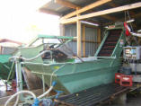
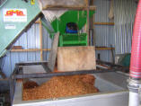

La Ferme de La Godinière
27410
Le Noyer en Ouche
dernière mise à jour de cette page : 22.10.2009
Notre ancienne adresse web :cidre.rene.lesur.club.fr est
devenue obsolète et est
transférée sur
http://pagesperso-orange.fr/lagodiniere27/
La Fabrication du Cidre
Normand
à la Ferme de la
Godinière
Suite de la page précédente : La Fabrication du
Cidre
Récolte des pommes
| ATTENTION : Comme vous
pouvez le deviner aisément, tout cela représente une certaine somme de
travail. Tout le monde en est conscient, que ce soit le consommateur,
ou le professionnel. A tel point que l'on commence à rencontrer des
producteurs de pommes à cidre, qui se lancent dans la commercialisation de
cidre, en portant leurs pommes chez un fabricant, et en reprenant les
bouteilles pour les mettre sur le marché, c'est bien plus simple comme
cela, et çà fait moins de boulot, ils mettent leur étiquette "Cidre
Artisanal" (évidemment, c'est un artisan qui est inscrit au registre des
métiers), avec leur nom comme l'impose et le permet la réglementation, et
dans le coin de l'étiquette, il y a un tout petit "emb 76xxx", qui
signifie que le produit n'est pas conditionné à la ferme. Mais le quidam de consommateur n'y voit que du feu, et assimile ce produit artisanal à un produit fermier fabriqué par la personne qui est en face de lui ... C'est TRÈS GRAVE pour nous... Consommateurs avertis qui êtes à la recherche de véritables produits fabriqués par nous, n'hésitez pas à poser des questions sur le processus de fabrication, et demandez à visiter les installations de fabrication, elles existent ou n'existent pas, et si par hasard il n'y a rien à voir, c'est qu'il y a peut-être un secret à cacher... Ouvrez l'œil... |
|
Je ne peux résister à vous faire partager cette découverte merveilleuse : De la part de Thierry qui vient de me faire découvrir une autre manière de faire du Cidre...
Bonjour, Suite à notre dernier mail d'information destiné à vous bénéficier de nos outils gratuits, vous avez été nombreux à tester et à utiliser Map Factory sur le site internet www.1001maps.fr . Nous tenions à vous en remercier car vos encouragements et vos remarques pertinentes nous permettent de faire évoluer nos outils dont vous êtes les bénéficiaires. A ce jour, plus de 60000 cartes sont affichées sur les sites internet des abonnés.
Fort de ce succès, nous venons de développer
un nouveau service de calcul d'itinéraire
100% graphique. Vous pouvez le tester ici : http://iti.1001maps.fr et l'installer
gratuitement sur votre site internet.
et là, çà nous en bouche un coin !!! Allez donc voir : Faites du Cidre !!! ...
Fallait y penser, c'est un bon plan... il n'y a pas mieux !!! Je ne peux résister à vous faire partager cette découverte merveilleuse : De la part de Thierry qui vient de me faire découvrir une autre manière de faire du Cidre...
Bonjour, Suite à notre dernier mail d'information destiné à vous bénéficier de nos outils gratuits, vous avez été nombreux à tester et à utiliser Map Factory sur le site internet www.1001maps.fr . Nous tenions à vous en remercier car vos encouragements et vos remarques pertinentes nous permettent de faire évoluer nos outils dont vous êtes les bénéficiaires. A ce jour, plus de 60000 cartes sont affichées sur les sites internet des abonnés.
Fort de ce succès, nous venons de développer
un nouveau service de calcul d'itinéraire
100% graphique. Vous pouvez le tester ici : http://iti.1001maps.fr et l'installer
gratuitement sur votre site internet.
et là, çà nous en bouche un coin !!! Allez donc voir : Faites du Cidre !!! ...
Fallait y penser, c'est un bon plan... il n'y a pas mieux !!!
Je n'oserais pas dire que c'est honteux, car le mot est trop faible et trop gentil, mais quand je pense au travail que nous, producteurs transformateurs faisons, avec toutes les obligations réglementaires et toutes les règles de traçabilité que la sécurité alimentaire tend à nous imposer... J'arrête ici mes états d'âme pour ne pas risquer de poursuites pour diffamation ou... Et que penser des ces consommateurs qui prennent çà comme du bon pain... |
Arrivée des pommes au pressoir
Une fois les pommes ramassées, elles sont amenées au pressoir pour être broyées et pressées afin d'en extraire le jus. Elles devront être lavées pour les débarrasser des particules de terre ainsi que des feuilles, brindilles et éventuels cailloux qui pourraient s'y trouver. Il faudra également enlever les pommes pourries impropres à la fabrication du cidre.
Lavage des pommes
|  |
C'est une étape primordiale pour obtenir un produit de qualité. Notre installation nous permet d'effectuer sans peine les opérations successives de lavage et de tri d'une manière parfaite. Les pommes qui sont dans la remorque tombent directement dans une trémie qui n'est ni plus, ni moins qu'un déterreur à pommes de terre, qui permet d'acheminer les pommes vers le lavage. Les rouleaux de la machine sur lesquels passent les pommes laissent tomber les feuilles, les brins d'herbe et les petits cailloux. Quand aux plus gros, ils suivront les pommes pour se retrouver au fond du bac à eau. |
|
Il ne reste plus qu'à enlever les pommes pourries et porteuses de moisissures
indésirables et notamment celles qui sont responsables de la Patuline qui est
une toxine dangereuse pour la santé. |
 |
Suite : La Fabrication du Cidre à la Ferme de la Godinière
|
Retour
Les Produits
ou
Accueil ou
Plan du
site |
En Savoir plus sur :
Ecrivez nous pour donner votre impression et votre suggestion, merci.
Ma messagerie est protégée par Avast
Conception et Réalisation : René Lesur